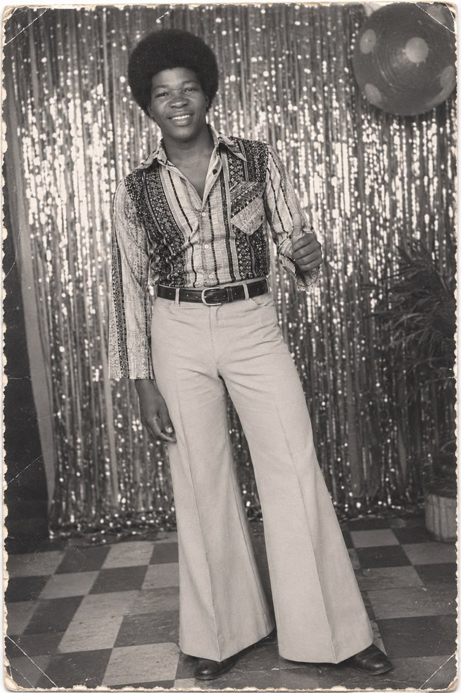
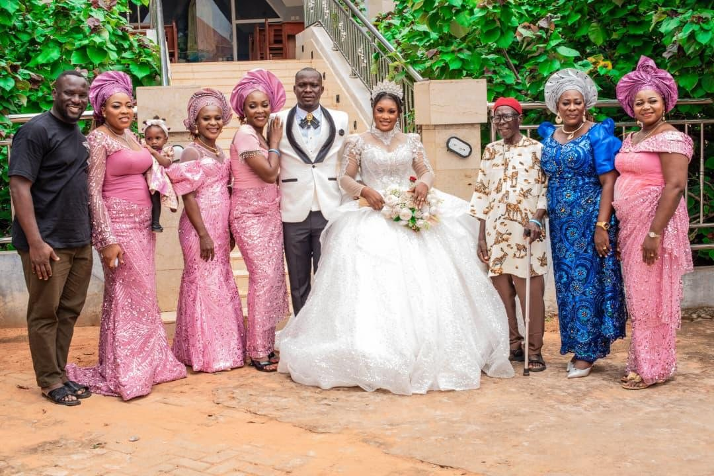
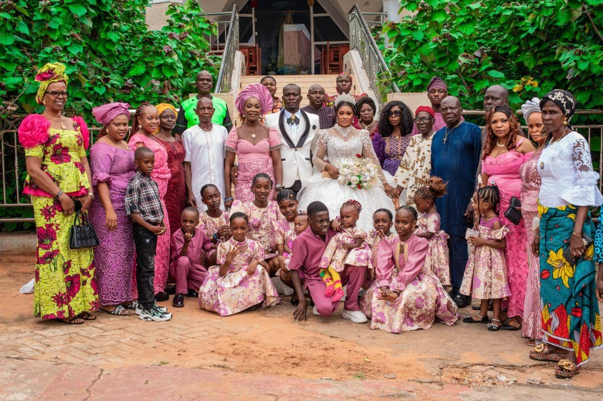
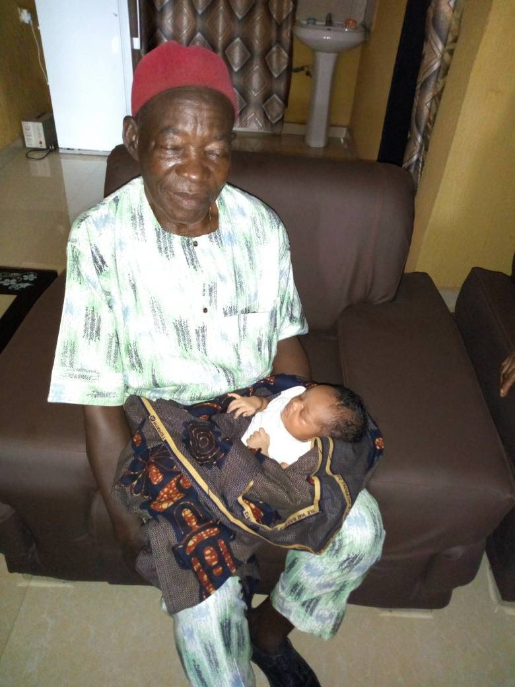

In Pictures
Photo Gallery
A journey through the decades — from his wedding day to family celebrations with his children and grandchildren. Click any photo to view it larger.







Have a photo to add? Please share it directly with a member of the Ogunor family for inclusion.